⬅ voltar resumão
🤓 RESUMO: Sistemas de arquivos 💻
Implementação (FAT, i-node)
Armazenamento da informação a longo prazo
- Deve ser possível armazenar uma quantidade muito grande de informação.
- A informação deve sobreviver ao término do processo que a usa – persistência.
- Múltiplos processos devem ser capazes de acessar a informação concorrentemente – compartilhamento.
Estrutura de arquivos
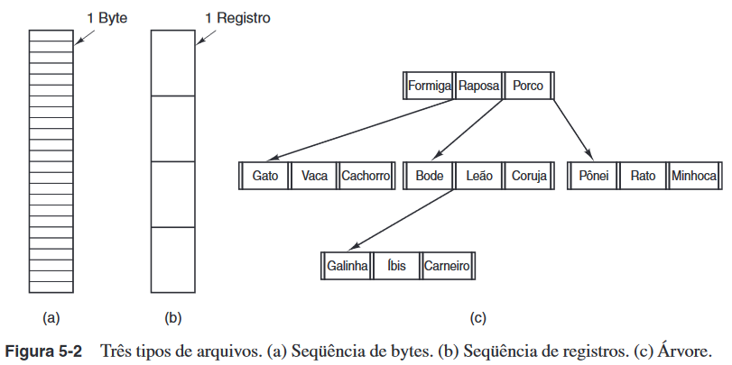
- sequência de bytes;
- sequência de registros;
- árvore.
Tipos de arquivos
- Arquivo executável: cabeçalho: número mágico, tamanho do código, dos dados,
dos segmentos de pilha e da tabela de símbolos, ponto de entrada. flags, código,
dados, bits de relocação, tabela de símbolos
- repositório (archive/biblioteca de funções para serem usadas por programas):
cabeçalho: nome do módulo, data, proprietário, proteção, tamanho. módulo-objeto.
Atributos (flags) de arquivos
Ex: arquivo somente de leitura, momento de criação, tamanho atual, ascii ou binário etc.
Acesso aos arquivos
- Acesso sequencial: conveniente quando o meio era a fita magnética.
- Acesso aleatório: essencial para sistemas de base de dados.
Operações com arquivos
Create, delete, opendir, closedir, readdir, rename, link, unlink.
Sistemas de diretórios hierárquicos
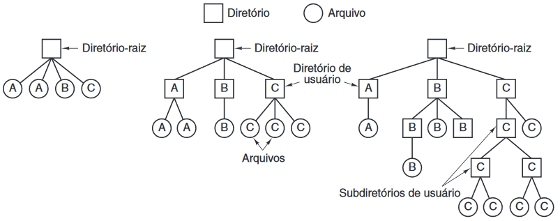
Diretórios: servem para fazer a organização de arquivos e de outros diretórios, é uma entidade
lógica que aponta pra outros diretórios ou arquivos.
Usualmente diretórios são implementados como arquivos especiais e seguem uma política de árvore.
Nomes de caminhos (pathnames)
Servem para acessar diretamente um diretório ou arquivo.
Operações com diretórios
Create, delete, opendir, closedir, readdir, rename, link, unlink.
Implementação do sistema de arquivos
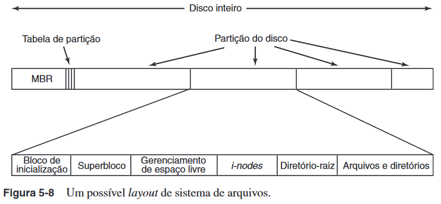
- Master Boot Record (MBR);
- tabela de partição: divide o disco em partições lógicas;
- bloco de boot: segunda parte do bootloader;
- superbloco: principais parâmetros do sistema de arquivo. ex: tipo do sistema, número de blocos;
- gerenciamento de espaço livre;
- i-nodes: estrutura de dados com informações sobre um arquivo;
- diretório-raiz: diretório inicial;
- arquivos e diretórios.
Implementação de arquivos (1)
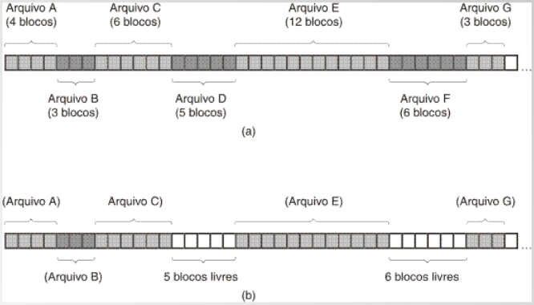
Alocação contígua: cada arquivo pra ser armazenado precisa ficar em blocos adjacentes
e pra manipular o arquivo só precisa saber onde começa o primeiro bloco.
- Vantagem: simples e rápida.
- Desvantagem: quando há remoção você precisa juntar os blocos livres, ou vai "perder"
aquele espaço vazio entre blocos.
Implementação de arquivos (2)
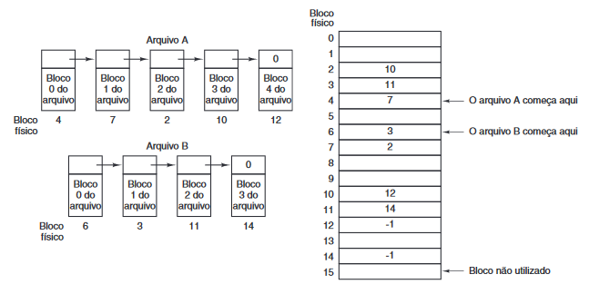
Armazenamento de um arquivo como uma lista encadeada: cada bloco do arquivo além de conter
os dados, ele contém o endereço do próximo bloco
- Em disco: custo de ficar usando a unidade de armazenamento, porque precisa passar
por cada bloco anterior e requer acesso ao disco, que é uma operação caracteres.
- Com tabela de alocação: a tabela vai ficar na memória principal, base dos arquivo fat, muito mais eficiente
Implementação de arquivos (3)
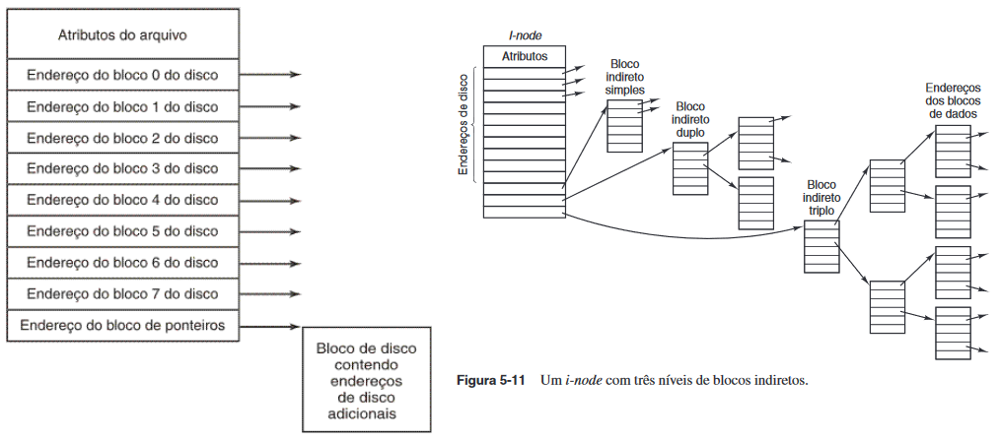
i-node: uma estrutura por aquivo, que contém os atributos e os endereços dos blocos do disco que o arquivo está adotando.
O arquivo só precisa carregar essa estrutura. Tem uma quantidade de entrada fixas, mas as últimas posições apontam para
blocos de disco com endereços adicionais.
- Vantagem em relação as tabelas de alocação: se há um problema em uma uma estrutura, só esse arquivo será afetado,
diferentemente do que se houvesse um problema na tabela.
- Usado em sistemas operacionais baseados em unix.
i-node em hierarquia: cada endereço adicional aponta pra outro bloco que (tem dados do arquivo e) apontam pra outros blocos.
Implementação de diretórios
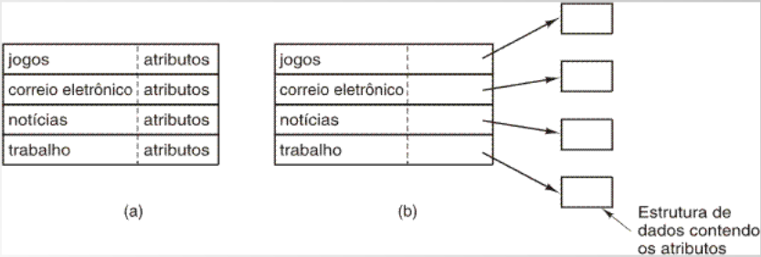
Diretórios são como uma tabela e cada entrada da tabela aponta para um arquivo ou outro diretório.
- Um diretório simples: entradas de tamanho fixo, endereços de disco e atributos na entrada do diretório.
- Diretório no qual cada entrada se refere apenas a um i-node.
Busca de um diretório no UNIX
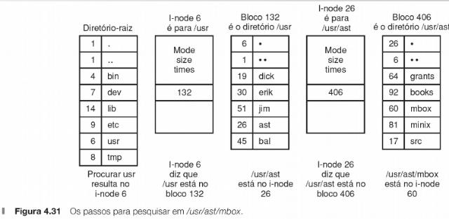
Informações sobre um arquivo no MS-DOS
nome do arquivo, extensão, atributos, reservado, tempo, data, número do primeiro bloco, tamanho.
Arquivos compartilhados (1)
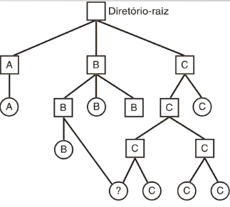
Criação de atalhos: dois diretórios podem apontar pro mesmo arquivo sem ter uma cópia.
- Atalho simbolico: tem o caminho do arquivo que está apontando. se tirar o original, o atalho fica inválido.
- Hard link: aponta direto pro i-node. se o arquivo original for removido, vai apontar pra um i-node invalido,
se esse i-node for reutilizado pode acabar apontando pro arquivo errado.
Arquivos compartilhados (2)
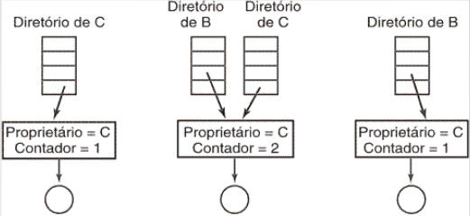
O i-node tem um contador que contém a quantidade de diretórios que estão apontando para o arquivo.
enquanto o contador for >= 1 o arquivo não será realmente removido.
Problema: o arquivo original vai ter espaço ocupado por um arquivo que ele não está mais usando.
Journaling
- Lidar com falhas durante as operações em disco.
- Faz log antes das operações. Se o sistema quebrar, na recuperação
(ex: no boot), checa por operações inacabadas e conclui a operação
- As operações logadas precisam ser idempotentes. Ou seja, sua repetição não vai causar nenhum prejuízo
ao sistema de arquivos. ex: atualizar o mapa de bits para marcar bloco n como livre.
Sistemas de arquivos virtuais
Integração de vários sistemas de arquivos em uma única estrutura.
Os processos não sabem da existência das distintas implementações.
Gerenciamento do espaço em disco
Considerações relevantes:
- Tamanho do bloco: eficiência.
- Monitoramento de blocos livres (ex: mapas de bits).
Tamanhos de arquivos
Tamanhos de blocos e partições
Gerenciamento de blocos livres
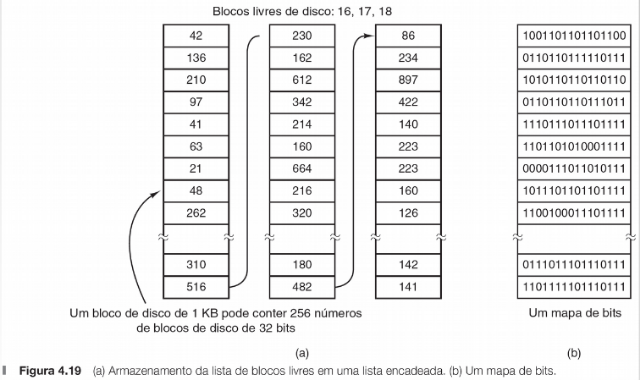